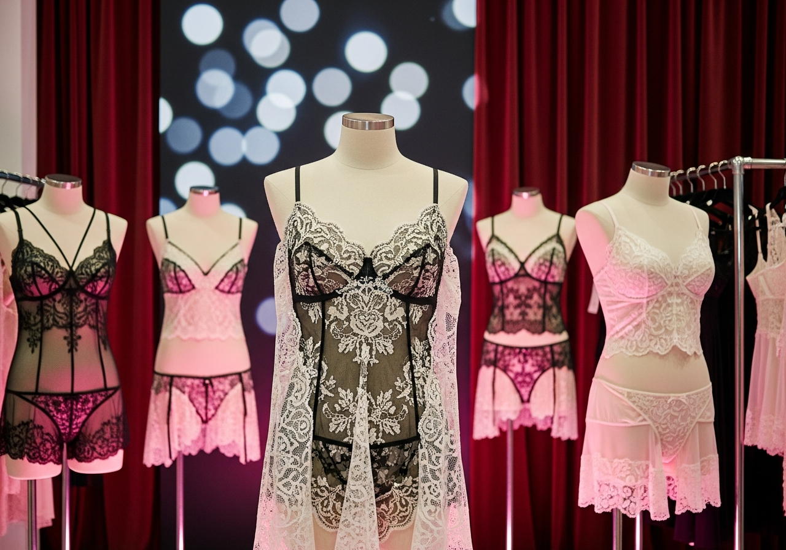
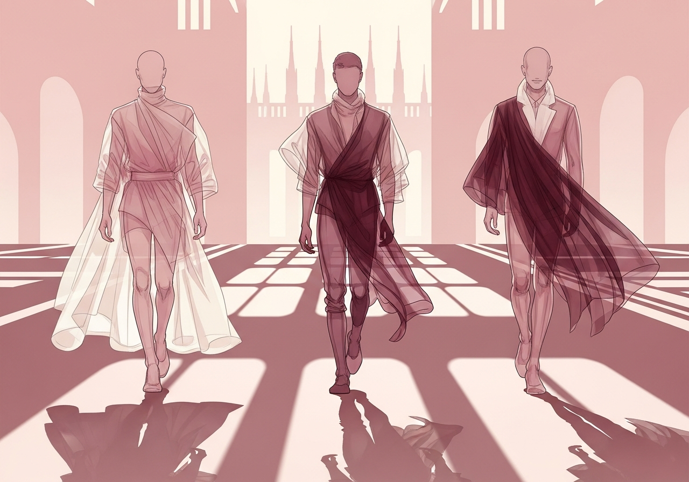
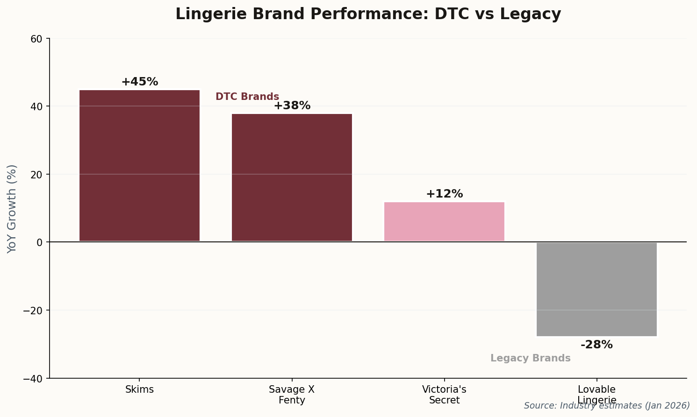
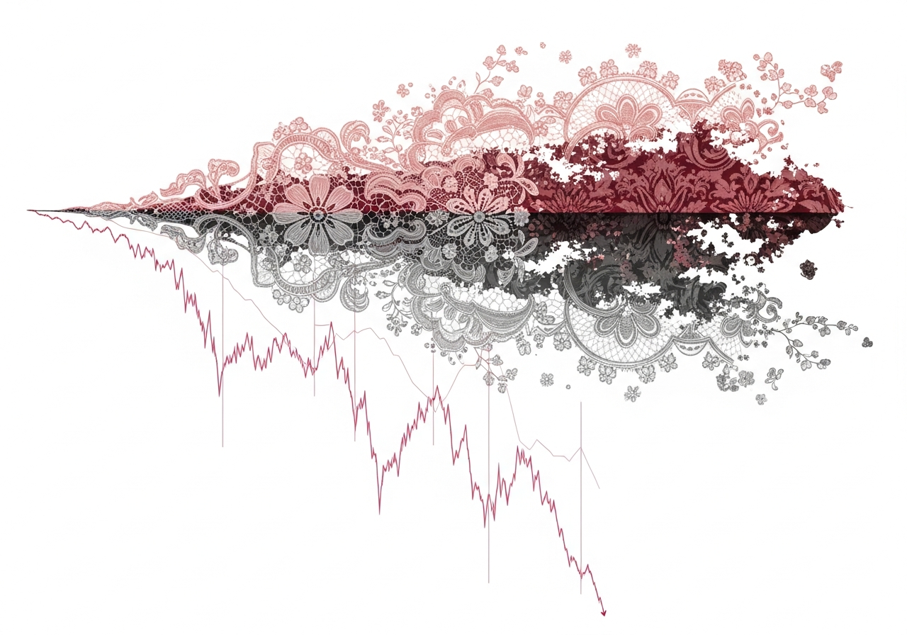
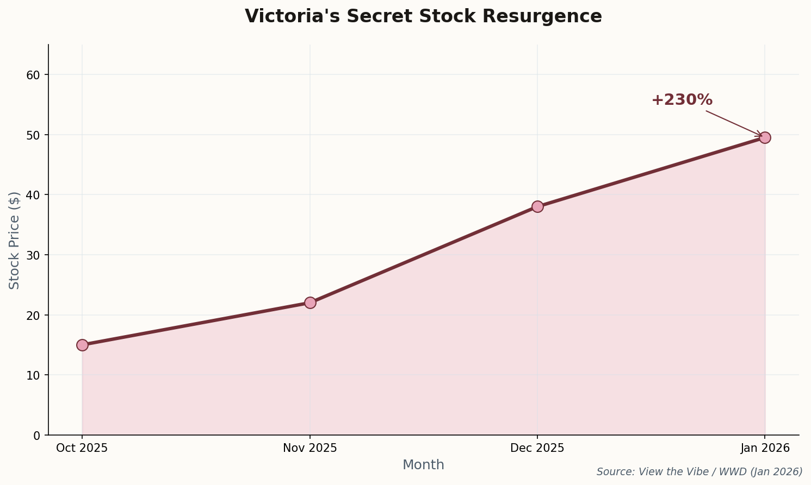

Lace, Luxury & Legislation: High Fashion's Intimate Revolution
From Paris trade shows to Golden Globes gowns, the lines between intimates and outerwear have never been more blurred. Here's what's shaping the $40B lingerie market this week.
The week that redefined intimate apparel

01
Paris Sets the Agenda: "Sensory Maximalism" Takes Center Stage
Fibre2FashionJanuary 17, 2026
The Salon International De La Lingerie opened its doors today in Paris, and the theme is unmistakable: the industry is betting big on texture over minimalism. "Sensory maximalism"—think layered laces, embroidered tulles, and fabrics that demand to be touched—dominated the opening presentations.
But the real headline? "Technological laces"—intricate patterns generated by AI design tools that would be impossible to create by hand. The adjacent Interfilière sourcing expo showcased bio-based materials that maintain luxury hand-feel while meeting sustainability mandates hitting European markets in 2027.
"A return to sensory experiences where touch and texture define the new luxury."
Why it matters: This show sets the buying agenda for the next 18 months. The AI-designed lace trend signals a fundamental shift in how intimate apparel will be conceived—and who gets credit for the "design."

02
Milan's "Soft" Men: When Menswear Borrows From the Boudoir
L'Officiel USA / WWDJanuary 16, 2026
Zegna kicked off Milan Men's Fashion Week with a collection that continued fashion's quiet revolution: the systematic softening of menswear through intimate apparel techniques. Sheer panels. Fluid silks. The kind of delicate draping that, five years ago, would have been confined to women's lingerie.
Dolce & Gabbana followed today with "translucent menswear"—a styling note that's moved from provocative outlier to genuine trend. The message is clear: the rigid boundaries between gender in intimate apparel are dissolving, and luxury brands are leading the charge.
Why it matters: This isn't just about aesthetics. The "genderless intimates" trend represents a massive market expansion opportunity—and a warning shot to brands still segmenting their lines by traditional gender categories.
03
The Consent Economy: UK Criminalizes AI-Generated Intimate Images
AI Business Help / BBCJanuary 15, 2026
New UK legislation effective this week makes non-consensual AI-generated intimate imagery a criminal offense. The immediate impact: X's AI tool Grok has restricted its ability to generate images of real people in revealing clothing, setting a precedent other platforms will likely follow.
For fashion, the implications are profound. Virtual influencers—AI-generated models that have become marketing staples—now face significant legal constraints in the UK market. Brands that have invested heavily in digital-first campaigns featuring synthetic models in lingerie will need to rethink their approach.
Regulatory Reality Check: This legislation creates the concept of "digital consent" in fashion marketing. Expect similar laws across the EU within 18 months, fundamentally changing how brands can use AI models for intimate apparel campaigns.
Why it matters: The era of "anything goes" in AI fashion marketing is ending. Brands that move quickly to establish consent frameworks will have a competitive advantage.

The great divide: DTC disruption vs. heritage decline

04
The Heritage Hangover: Lovable Lingerie Hits Rock Bottom
MarketsMojoJanuary 14, 2026
Lovable Lingerie Ltd shares dropped to a 52-week low this week, a stark illustration of the widening chasm between legacy lingerie brands and their DTC competitors. While Skims and Savage X Fenty continue to capture market share and cultural relevance, heritage brands are struggling to articulate why they still matter.
The mid-market is particularly brutal. Caught between fast-fashion intimates and celebrity-led luxury, brands like Lovable lack both the price advantage and the cultural cachet to compete. Their distribution model—relying on department stores that are themselves in decline—compounds the problem.
Why it matters: This isn't just one company's struggle. It's a preview of consolidation coming to the entire mid-market lingerie segment. Expect acquisition activity to accelerate as brands with strong heritage but weak digital presence become targets.
05
Victoria's Secret's Y2K Gambit: Nostalgia as Strategy
View the Vibe / WWDJanuary 12, 2026
Victoria's Secret's "A Very VS Valentine's" campaign isn't subtle about its strategy: explicit visual references to Gisele Bündchen's iconic 2001 campaigns, with Hailey Bieber as the contemporary stand-in. The Y2K nostalgia play is calculated—and, by the numbers, it's working.
The brand's stock has surged +230% in recent months, driven partly by this return to high-gloss fantasy after years of attempting (and largely failing) to rebrand around "inclusivity." The market is rewarding a return to unabashed glamour.

VS stock resurgence tracks with return to "fantasy" marketing
Why it matters: The success validates a counter-intuitive insight: consumers want aspiration in lingerie marketing. The pendulum may be swinging back from "real bodies" campaigns to glamour—at least for heritage brands trying to reclaim cultural relevance.
06
Visible Intimates: The Golden Globes Declare a Trend
InStyle / The CutJanuary 11, 2026
The 2026 Golden Globes red carpet read like a lingerie lookbook. Zoë Kravitz in a sheer Saint Laurent slip dress that blurred every line between nightwear and couture. Sofía Vergara in structured corsetry. Nikki Glaser channeling classic boudoir.
This wasn't trend-setting—it was trend confirmation. When the A-list simultaneously decides that visible underwear is appropriate for the biggest awards show of the season, the "underwear as outerwear" moment has officially arrived at mass market.
Why it matters: Red carpet adoption is the final validation before trends hit retail. Expect fast-fashion interpretations of these looks to dominate spring collections—and lingerie brands to capitalize with "outerwear-ready" lines.
The intimate apparel industry is at an inflection point. Technology is reshaping design. Legislation is reshaping marketing. Celebrity is reshaping aspiration. The winners will be brands that can navigate all three simultaneously.